🇫🇷 Version française — Mode d'emploi
- Karim, 16 jaar (Afghanistan) — uw « lopende » voogdij: zijn dossier ziet u op de meeste schermafbeeldingen (verslagen, bank, kosten, actieve adviezen…).
- Fatou, 16 jaar (Guinee) — de voogdij die start: u bent net aangesteld, alles moet nog gebeuren.
- Ali, 18 jaar (Afghanistan) — de afgeronde voogdij: zijn dossier is afgesloten en gearchiveerd.
Inhoud
- De applicatie openen
- Uw wachtwoord aanmaken
- De welkomstrondleiding
- Het dashboard
- De vervaldata van één jongere bekijken
- Een dossier aanmaken (DVZ-fiche)
- De automatische documentanalyse
- Het dossier van de jongere in detail
- De vrederechter en uw verslagen
- De agenda & tolken
- Het geld van de jongere (bank)
- Uw verplaatsingskosten
- Documenten bewaren (bijlagen)
- Een document vertalen NL ↔ FR
- De Voogdengids (uw cursussen)
- Het glossarium van afkortingen
- Back-uppen en doorgeven
- Een dossier afsluiten op 18 jaar
- Veelgestelde vragen
- ⚖️ De nieuwe regels 2025-2026
- 🧰 De geavanceerde tools
1De applicatie openen
Drie mogelijkheden — kies de eenvoudigste voor u:
- De internetlink (aanbevolen): open tseli485.github.io/cgra-mena-platform in uw browser (Chrome, Edge, Firefox…). Tip: kies in het browsermenu « App installeren » om ze als een echte applicatie te gebruiken, die daarna ook zonder internet werkt.
- De bureaubladapplicatie: download ze via de downloadpagina (Windows, Mac, Linux). Dubbelklikken, klaar.
- Enkel Windows: typ
winget install MENA-Tuteurin een terminal (zodra de Microsoft-publicatie gevalideerd is).
2Uw wachtwoord aanmaken
Bij de eerste opening vraagt de applicatie u een wachtwoord aan te maken. Dat is de sleutel die alle gegevens versleutelt (AES-256, hetzelfde niveau als de banken).
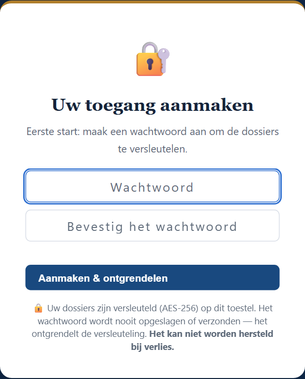
- Kies een wachtwoord van minstens 8 tekens dat u onthoudt.
- Bevestig het en valideer.
3De welkomstrondleiding
Net na het aanmaken van het wachtwoord toont een venster de 5 essentiële handelingen. Lees het rustig: het is de samenvatting van deze hele handleiding.
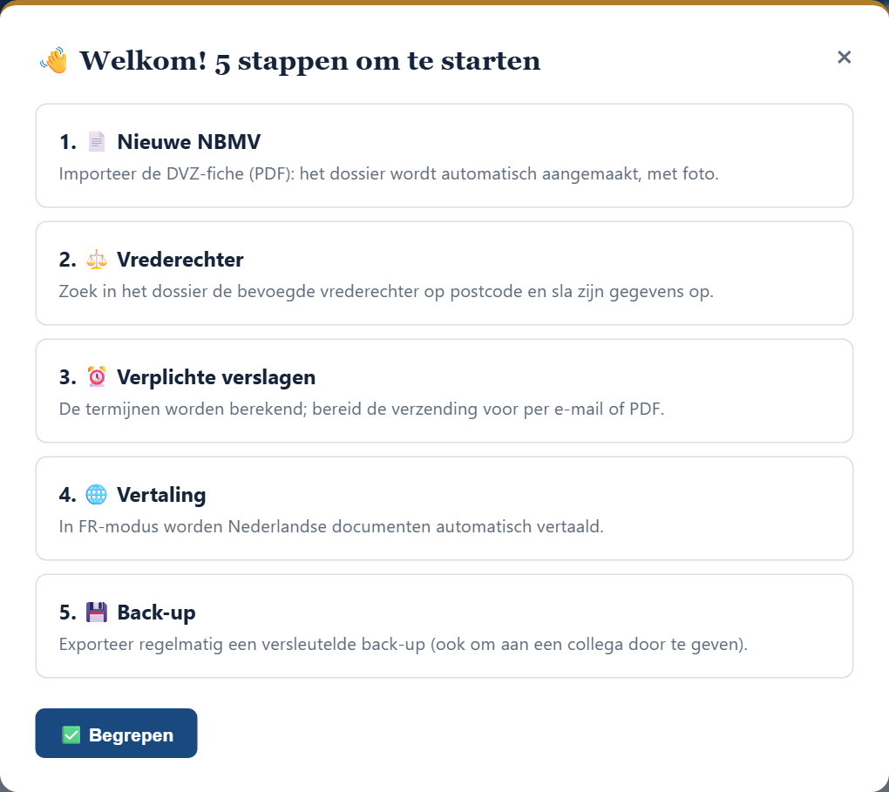
4Het dashboard
Dit is uw startpagina. Van boven naar onder:
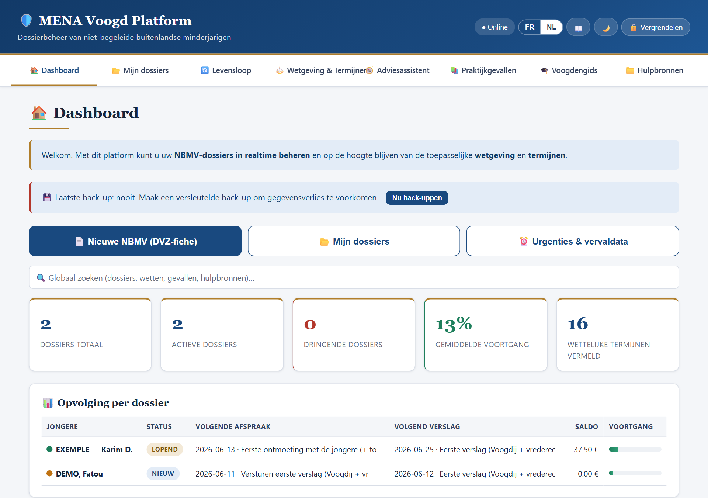
- De back-upherinnering (rode banner): verschijnt als u al meer dan 7 dagen geen back-up exporteerde. Negeer ze niet!
- De drie grote knoppen: een nieuw NBMV-dossier aanmaken, uw dossiers bekijken, naar de vervaldata gaan.
- Het globale zoekveld: typ om het even welk woord (een naam, « gezinshereniging », « Salduz »…) — het zoekt in uw dossiers, de wetgeving, de praktijkgevallen en de hulpbronnen.
- De tellers: aantal dossiers, dringende, gemiddelde voortgang.
5De vervaldata van één jongere bekijken
Om verwarring tussen jongeren te vermijden toont de kaart « ⏰ Vervaldata » niets zolang u geen jongere kiest in het keuzemenu.
Concreet voorbeeld: u bent voogd van Karim en Fatou. Door Karim te selecteren ziet u ZIJN halfjaarlijkse verslagen en ZIJN afspraken — niets van Fatou. Onmogelijk om de termijnen van de ene met de andere te verwarren.
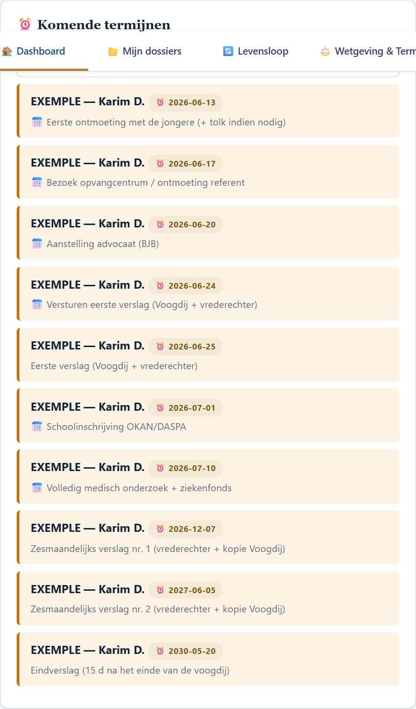
En voor het overzicht van al uw jongeren in één oogopslag, kijk net eronder:
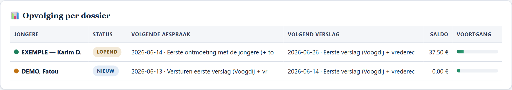
6Een dossier aanmaken: de DVZ-fiche importeren
Wanneer de Dienst Voogdij u een jongere toevertrouwt, ontvangt u zijn fiche « niet-begeleide minderjarige vreemdeling » (de DVZ-fiche). De applicatie leest ze voor u:
- Klik op het dashboard op 📄 Nieuwe NBMV (DVZ-fiche).
- Klik op « 📎 Een PDF-fiche automatisch lezen » en kies het ontvangen PDF-bestand.
- De applicatie vult de velden zelf in — inclusief de foto van de jongere, automatisch uitgesneden.
- Controleer, vul aan indien nodig, en klik op 📁 Dossier aanmaken.
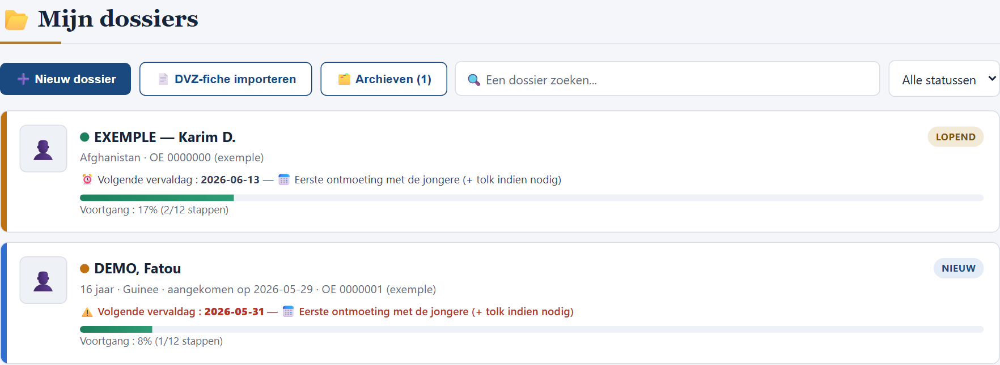
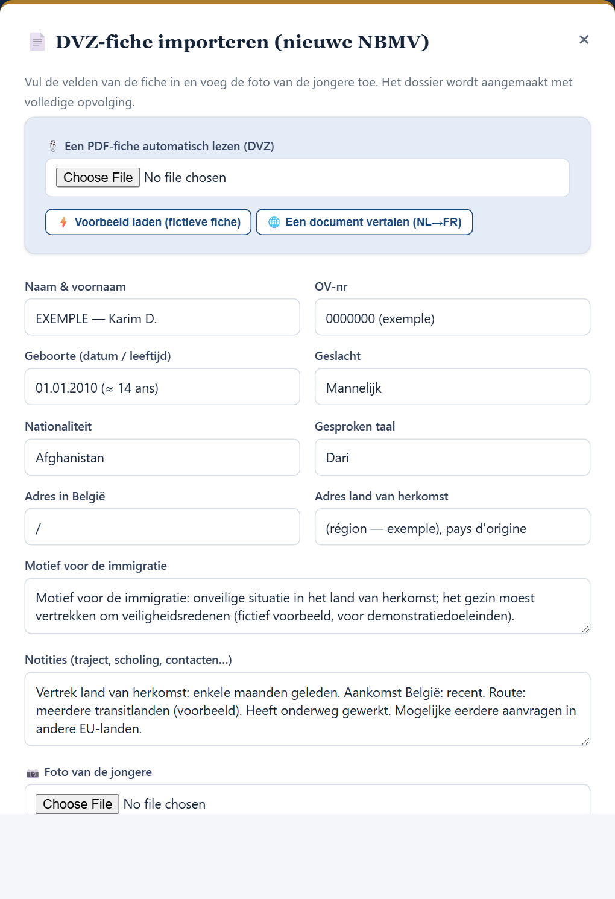
7De automatische documentanalyse
Dit is uw juridisch vangnet. Elk document dat u invoert (geïmporteerde fiche, vertaling, PDF-bijlage, geplakte tekst) wordt geanalyseerd: de applicatie detecteert 19 belangrijke situaties — weigeringsbeslissing, erkenning als vluchteling, bevel om het grondgebied te verlaten, adreswijziging, oproeping door politie of CGVS, leeftijdstest, verdwijning…
Uit het leven gegrepen: u ontvangt een brief van 3 pagina's over Karim. U plakt hem in de analyse: de applicatie detecteert een weigering van het CGVS ÉN dat Karim overgeplaatst is naar Charleroi. In één klik: het beroep (30 dagen) wordt ingepland met de advocaat, het adres wordt bijgewerkt, en de applicatie meldt dat de bevoegde vrederechter wellicht verandert.
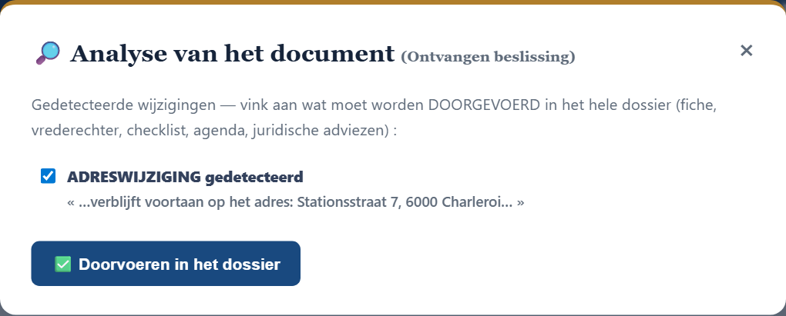
- Vink de juiste detecties aan (alles is standaard aangevinkt).
- Klik op ✅ Doorvoeren in het dossier.
- De applicatie werkt het hele dossier bij: adres, bevoegde vrederechter, juridisch statuut, checklist, en maakt de nodige afspraken aan (bv. « beroep binnen 30 dagen » → afspraak advocaat D+3) plus juridische adviezen met wetsverwijzingen.
8Het dossier van de jongere in detail
Klik op een kaart om het volledige dossier te openen. Alles is geordend in uitklapbare secties:
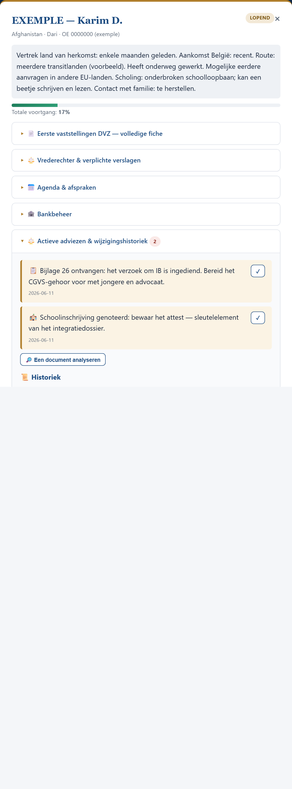
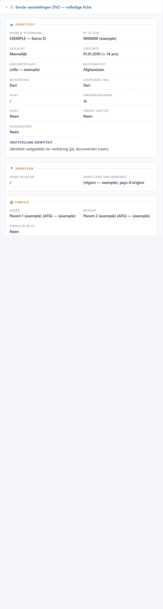
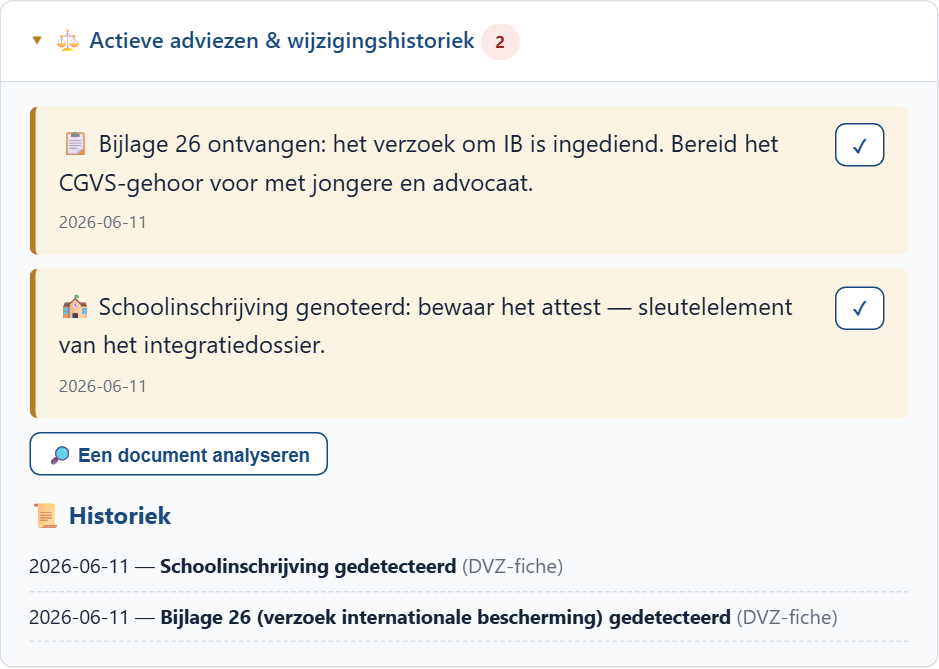
9De vrederechter en uw verplichte verslagen
Als voogd legt de wet u drie soorten verslagen op (programmawet 24/12/2002, art. 19 en 24):
- Eerste verslag: binnen 15 dagen na uw aanstelling → Dienst Voogdij ÉN vrederechter;
- Halfjaarlijks verslag: 2 keer per jaar → vrederechter, kopie aan de Dienst Voogdij;
- Eindverslag: binnen 15 dagen na het einde van de voogdij.
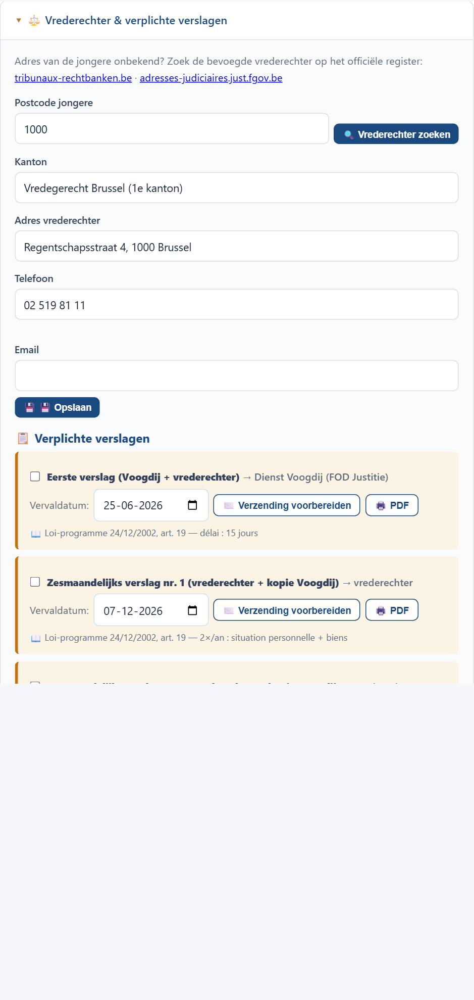
- Vul de postcode van de verblijfplaats in en klik op « 🔍 Vrederechter zoeken ». Sla op.
- Klik op elke vervaldag op 🖨️ PDF: het verslag wordt vooringevuld met de dossiergegevens (identiteit, school, gezondheid, rekeningsaldo…). U vult enkel de zones [Aan te vullen] aan.
- « ✉️ Verzending voorbereiden » maakt de e-mail met de juiste bestemmeling.
- Vink het verslag af zodra verzonden: de applicatie bewaart de datum.
10De agenda & tolken
📅 De dossieragenda (in elk dossier)
Bij het aanmaken van het dossier plant de applicatie de 10 typische afspraken van het begin van een voogdij (eerste ontmoeting, centrum, advocaat, eerste verslag, school, arts, bank, CGVS-voorbereiding…). Wijzig de data vrij, voeg eigen afspraken toe, en exporteer alles naar uw persoonlijke agenda (.ics-bestand: Google Agenda, Outlook…).
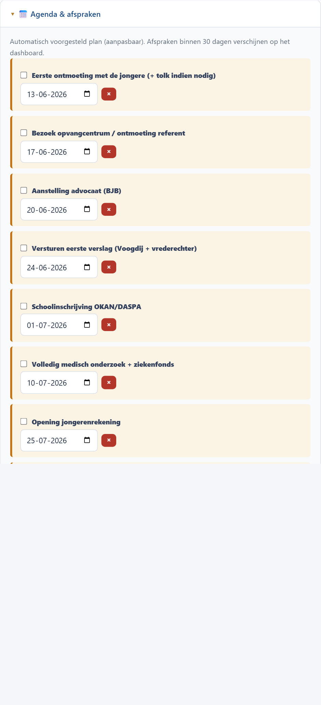
🗓️ De module Agenda & Tolken (hoofdtab)
De meeste NBMV's spreken noch Frans noch Nederlands. Elke belangrijke afspraak (CGVS-gehoor, advocaat, arts, vrederechter…) vereist een tolk. De tab 🗓️ Agenda & Tolken centraliseert alles: afspraken, tolken, bezoekverzoeken van de jongere en automatische berichten in zijn taal.
📋 De drie sub-tabs
Klik op 🗓️ Agenda & Tolken in de navigatiebalk:
- 📅 Afspraken — maak, wijzig en volg al uw afspraken op (type, datum, uur, locatie, status, tolk). Filter per dossier, type of status.
- 🌐 Tolken — raadpleeg de databank van erkende organisaties (13 nationale structuren: Convocabulaire, SPF Justitie, CIRÉ, Fedasil, Vluchtelingenwerk…) en voeg uw eigen tolken toe (versleuteld op uw toestel).
- 📋 Bezoekverzoeken — registreer de verzoeken van de jongere (« ik wil mijn advocaat zien », « mijn familie contacteren »…), volg de status op en maak meteen de bijhorende afspraak aan.
🌐 De databank erkende tolken
De tab Tolken bevat 13 officiële organisaties en vzw's die de voornaamste NBMV-talen in België dekken:
- Gedekte talen: Arabisch, Pashto, Dari, Somalisch, Tigrinya, Amhaars, Koerdisch, Lingala, Albanees, Georgisch, Oekraïens, Russisch, en meer dan 30 andere talen via de commerciële bureaus.
- Gratis of betalend: elke fiche vermeldt het tarief (veel zijn gratis voor NBMV's: Convocabulaire, Alter, Fedasil, CIRÉ…) en de reservatietermijn.
- Een eigen tolk toevoegen: als u een vertrouwde tolk heeft gevonden, voeg hem toe met al zijn contactgegevens — hij is beschikbaar in al uw afsprakenformulieren en wordt versleuteld op uw toestel bewaard.
convocabulaire@caritas.be, minstens 48u op voorhand. De Dienst Voogdij kan ook via uw referent eigen tolken inzetten.📅 Een afspraak aanmaken en een tolk koppelen
- Klik op ➕ Nieuwe afspraak.
- Kies het NBMV-dossier en het type (e-advocaat, CGVS-gehoor, DVZ, medisch, school, vrederechter…).
- Vul de datum, het uur, de locatie en het volledige adres in.
- Als een tolk nodig is, kies hem uit de lijst (uw eigen tolken + erkende organisaties).
- Kies de vervoerswijze van de jongere: autonoom (hij gaat zelf) of voogd haalt hem op (geef het ophaaladres op).
- Sla op — de applicatie stelt meteen voor een bevestigingsbericht te sturen aan de jongere in zijn taal.
📱 Een bericht sturen aan de NBMV in zijn taal
Dit is een van de belangrijkste functies van de module. Zodra een afspraak bevestigd is, genereert de applicatie automatisch een bericht in de taal van de jongere (gedetecteerd vanuit zijn dossier):
- 12 talen beschikbaar: Arabisch, Pashto, Dari/Farsi, Somalisch, Tigrinya, Albanees, Oekraïens, Russisch, Georgisch, Frans, Nederlands, Engels (fallback).
- Het bericht bevat: datum, uur, locatie, adres, aanwezigheid van een tolk, ophaallocatie.
- Rechts-naar-links talen (Arabisch, Pashto, Dari) worden correct weergegeven.
Om het bericht te verzenden, klik op 📱 Bericht NBMV op de afsprakenkaart, en kies:
- 💬 WhatsApp — opent WhatsApp direct met het nummer van de jongere en het vooraf ingevulde bericht (het nummer moet in zijn dossier staan).
- 📋 Kopiëren — kopieert het bericht om het in een andere app te plakken (SMS, Messenger, Signal…).
- 📧 E-mail — opent uw e-mailclient met het vooraf ingevulde bericht.
📧 Coördineren met de tolk (e-mail)
Op elke afsprakenkaart genereert de knop 📧 Coördinatie een vooraf opgestelde e-mail (FR of NL naargelang uw taal) met alle gegevens van de afspraak, te sturen aan de tolk en andere betrokkenen ter bevestiging van hun beschikbaarheid.
📋 De bezoekverzoeken van de NBMV beheren
De jongere uit een verzoek: « ik wil mijn advocaat zien », « mijn familie in Duitsland contacteren », « naar een voetbalmatch gaan »… Registreer het in Bezoekverzoeken:
- Klik op ➕ Nieuw bezoekverzoek.
- Kies het dossier, het type verzoek, de gewenste datum van de jongere en de urgentie.
- Noteer de details en de status (Verzoek ontvangen → In coördinatie → Afspraak gepland → Uitgevoerd).
- Klik vanuit het verzoek op 📅 Afspraak aanmaken om rechtstreeks naar het aanmaakformulier te gaan — datum en type zijn vooringevuld.
11Het geld van de jongere (bankopvolging)
U beheert de goederen van de minderjarige onder toezicht van de vrederechter. Noteer hier elke inkomst en uitgave: de applicatie berekent het saldo en genereert het officiële uittreksel bij uw halfjaarlijks verslag.
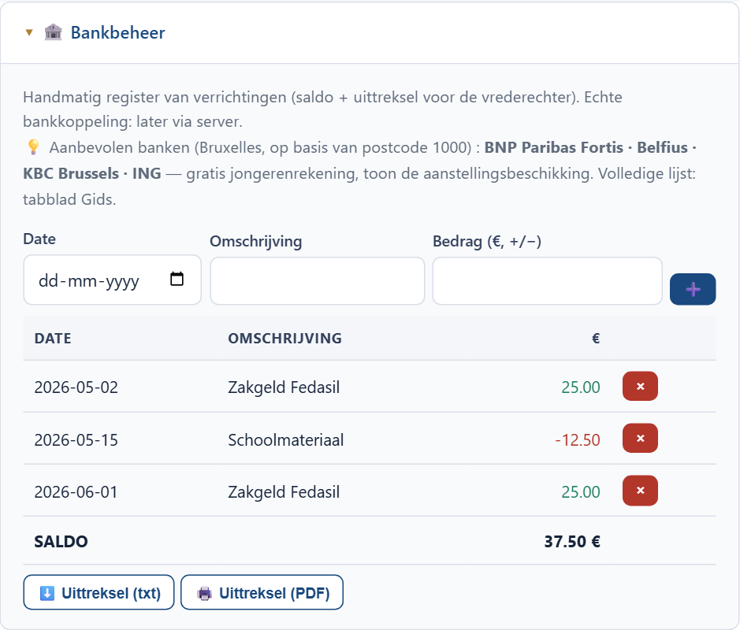
12Uw verplaatsingskosten (terugbetaling)
De FOD Justitie betaalt u 0,428 €/km terug (geïndexeerd tarief — aanpasbaar in de applicatie) plus parking en verantwoorde kosten. Noteer elke verplaatsing dezelfde dag:
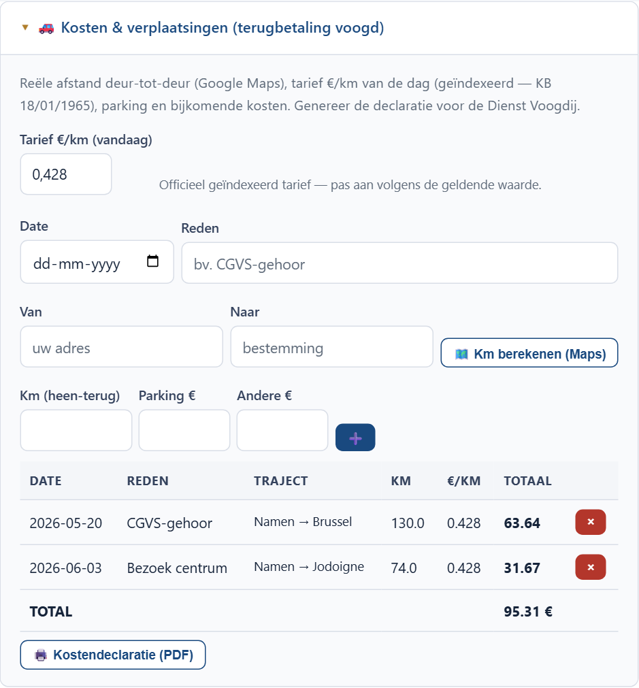
- Datum, reden (bv. « CGVS-gehoor »), vertrek en bestemming.
- Klik op « 🗺️ Km berekenen » → neem de km over (heen-terug).
- Voeg parking/diversen toe, dan ➕.
- Op het einde van de periode: 🖨️ Kostendeclaratie (PDF) → naar de Dienst Voogdij met uw bewijsstukken.
👤 Uw voogdprofiel: één keer invullen, overal aan het werk
Klik op de knop 👤 rechtsboven en vul uw gegevens in: naam, thuisadres, postcode, gemeente, telefoon, e-mail, voogdnummer. Versleuteld bewaard op uw toestel, daarna automatisch gebruikt:
- op alle gegenereerde documenten: verslagen (blok « Van (voogd) » vooringevuld), kostendeclaraties (hoofding en naamtekening), CGVS-voorbereiding voor de advocaat;
- als standaardvertrekadres van elke verplaatsing en rondrit — het veld blijft vrij aanpasbaar als u die dag elders vertrekt.
📏 De km van de beste route, rechtstreeks in het programma
Google Maps openen hoeft niet meer: de knop 📏 Km automatisch (beste route) berekent de werkelijke snelste wegroute tussen uw twee adressen en vult het veld met de heen-terug-km (altijd aanpasbaar). Voorbeeld: thuis Charleroi → CGVS Anderlecht = 128,5 km HT in 3 seconden. In de rondritplanner wordt de schatting automatisch verfijnd naar werkelijke wegkilometers (kolom « km (werkelijke weg ✓) »), ook bij elke herschikking. Google Maps blijft beschikbaar als optie.
🚗 Het overzicht « Mijn kosten (per jongere) » — uw boekhouding per voogdij
Elke verplaatsing is gekoppeld aan de jongere in wiens dossier u ze registreert. Om alles in één keer te zien: dashboard → 🚗 Mijn kosten (per jongere):
- Gegroepeerd per jongere: één blok per voogdij met elke verplaatsing (datum, reden, traject, km, €) en het subtotaal km/€;
- Jaar- en maandfilters + algemeen totaal van de periode;
- ➕ Verplaatsing toevoegen zonder het dossier te openen: kies de jongere in de lijst;
- 🖨️ Globale declaratie (PDF): een professioneel document PER VOOGDIJ gegroepeerd (vereiste van de Dienst Voogdij: de vergoeding is per minderjarige), met subtotalen en algemeen totaal, klaar om te ondertekenen;
- De statistieken (📈) tonen ook de verdeling km/€ per jongere.
📍 Een adres correct invoeren (en de lijst van 101 centra)
Gebruik het formaat « Straat en nr, POSTCODE Gemeente » — bijvoorbeeld Stationsstraat 12, 9100 Sint-Niklaas. De postcode sluit elke verwarring tussen gelijknamige gemeenten uit: de applicatie gebruikt hem prioritair om het adres te lokaliseren.
- Ingebouwde keuzelijst: klik in een veld « Van », « Naar » of een rondrit-etappe en de 101 officiële opvangcentra (Fedasil, Rode Kruis, Croix-Rouge, OOC…) worden voorgesteld — typ een centrum- of gemeentenaam en kies: het exacte adres wordt ingevuld. Vrije invoer blijft uiteraard mogelijk.
- Centra raadplegen: tabblad Hulpbronnen → « 🏠 NBMV-opvangplaatsen »: de 101 centra per regio (Brussel 17, Wallonië 46, Vlaanderen 38) en per operator, met knoppen « Adres kopiëren » en « Maps ». Officiële Fedasil-bron, geverifieerd juni 2026.
- Google Maps opent niet? Uw browser blokkeert pop-ups: er verschijnt dan een directe link onder de knop — klik erop.
🧭 Meerdere bezoeken op één dag? De rondritplanner
Gehoor bij het CGVS in Anderlecht, langs de Dienst Vreemdelingenzaken, daarna bezoek aan het centrum in Geldenaken — allemaal op één dag? Registreer geen drie aparte trajecten: klik op 🧭 Rondrit plannen (sectie Kosten).
- Voer uw vertrekadres in (onthouden voor de volgende keer) en de te bezoeken plaatsen (3 velden, knop « ➕ Plaats toevoegen » voor meer).
- « 🧭 Optimale route voorstellen »: de applicatie lokaliseert de adressen en berekent de meest economische volgorde, als lus heen-terug vanaf uw vertrekpunt.
- Niet akkoord met de volgorde? De pijlen ↑ ↓ herschikken de bezoeken (1e, 2e, 3e…) — de km worden herberekend.
- « 🗺️ Volledige route in Google Maps » opent het echte traject met alle haltes: controleer de exacte km en pas het veld aan indien nodig.
- « 💾 Rondrit opslaan als kost »: één lijn, met de bezoekvolgorde, de heen-terug-km en het bedrag aan het dagtarief.
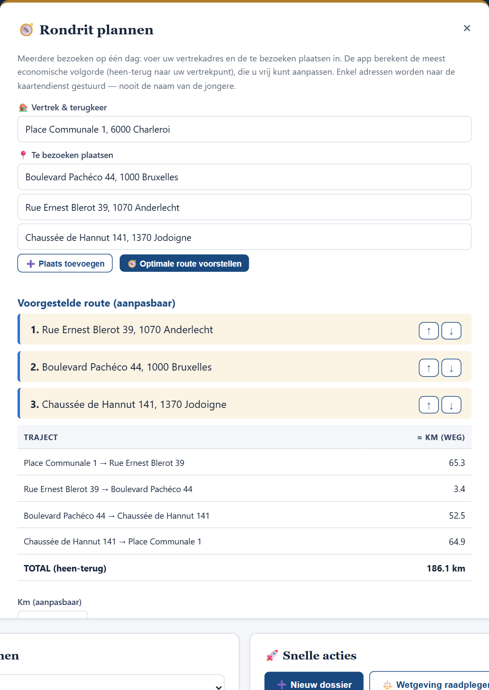
13Documenten bewaren (bijlagen)
Scan of fotografeer elk officieel document (bijlage 26, attest, kaart, rapport…) en plaats het in het dossier: het wordt versleuteld op uw toestel bewaard. Een PDF wordt bovendien automatisch geanalyseerd (stap 7).
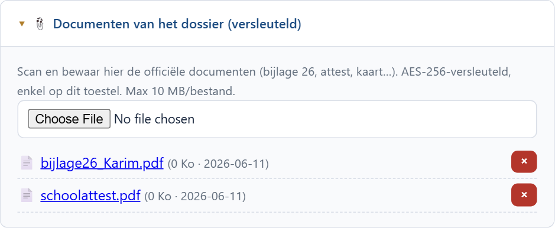
14Een document vertalen NL ↔ FR
Twee hulpmiddelen, bereikbaar vanuit het dossier (« 🌐 Document vertalen ») of het importvenster:
- ➡️ Woordenboek (direct): onmiddellijke vertaling, exact voor de administratieve woordenschat; onzekere woorden worden geel gemarkeerd.
- 🧠 AI-vertaling (lokaal): een echte neuronale vertaling, in beide richtingen NL ↔ FR. Eerste gebruik: eenmalige download van ±47 MB, daarna werkt alles offline. Zoals altijd: niets verlaat uw toestel.
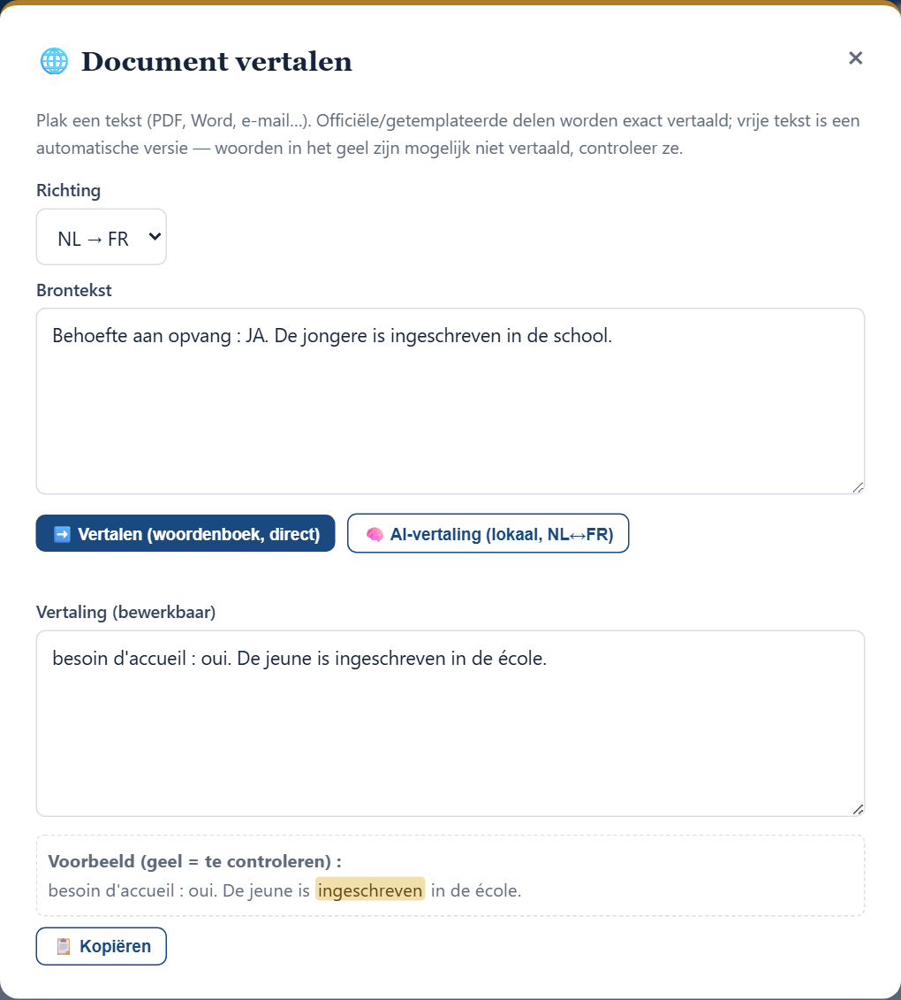
15De Voogdengids: uw volledige cursussen
Het tabblad 🎓 Voogdengids is uw ingebouwde opleiding: 13 modules die de hele voogdij dekken, van uw aanstelling tot de 18 jaar van de jongere. Elke module bevat: een eenvoudige cursus, de acties in volgorde, de af te geven documenten (en aan wie), de valkuilen en de wetsverwijzingen.
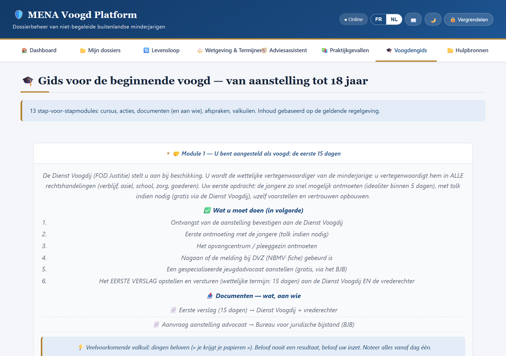
16Het glossarium van afkortingen
CGVS, BGV, OKAN, MINTEH… De NBMV-wereld zit vol afkortingen. Klik op de knop 📖 rechtsboven, op elk moment:
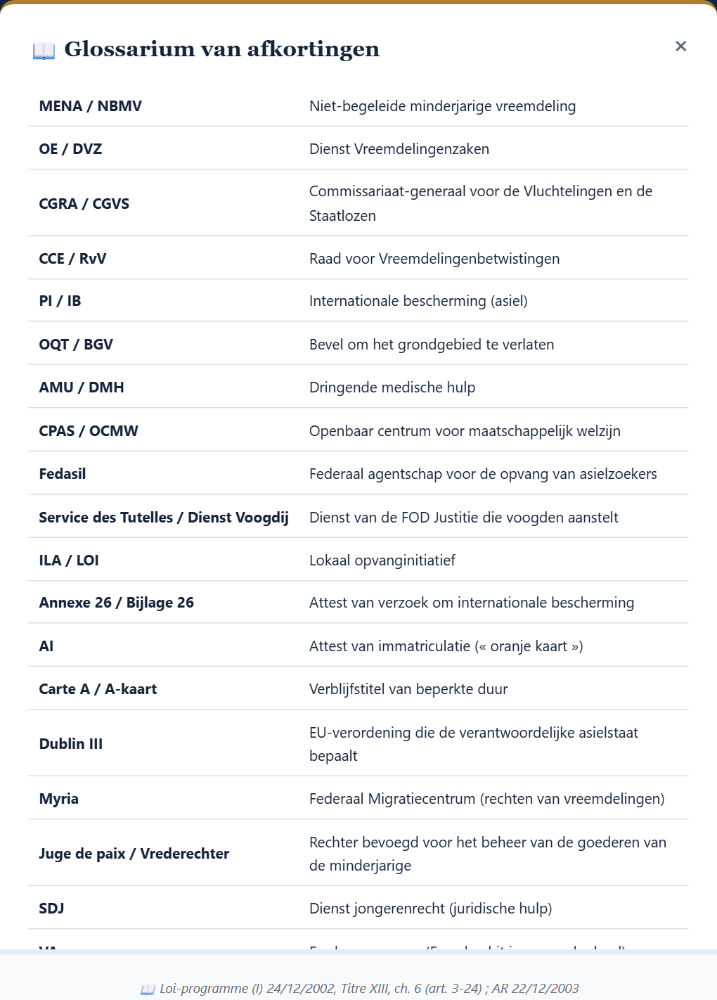
17Back-uppen en een dossier doorgeven
Uw gegevens leven enkel op uw toestel: de back-up is dus uw verantwoordelijkheid. Eén keer per week (de banner op het dashboard herinnert u eraan):
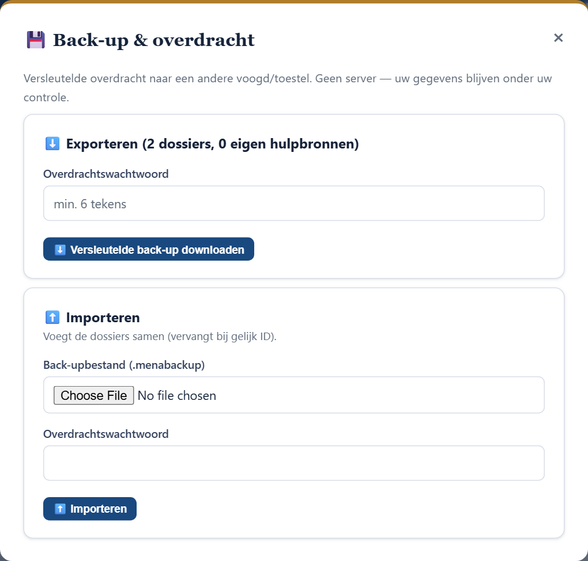
- Dashboard → 💾 Back-up / Transfer.
- Kies een back-upwachtwoord (mag verschillen van het hoofdwachtwoord) → « Exporteren ». Bewaar het bestand veilig (USB-stick, schijf).
- Een dossier doorgeven aan een collega-voogd: bezorg hem het
.menabackup-bestand + het wachtwoord via twee verschillende kanalen (bv. bestand per e-mail, wachtwoord per sms). Hij importeert het via hetzelfde venster: dossiers, archieven en bijlagen inbegrepen.
18Een dossier afsluiten (de 18 jaar)
De voogdij eindigt automatisch op 18 jaar (bereid de overgang voor vanaf 16,5 jaar — Module 11 van de Gids). Zodra het eindverslag verzonden is en de documenten aan de jongere overhandigd:
Voorbeeld: Ali is net 18 geworden. U stuurde het eindverslag, overhandigde zijn originele documenten en sloot de rekening af in zijn aanwezigheid. Zijn dossier gaat naar de archieven — twee jaar later stelt de Dienst Voogdij u een vraag: u raadpleegt het in twee klikken.
- Open het dossier → 📦 Afsluiten & archiveren.
- Het dossier verlaat uw actieve lijst maar blijft altijd raadpleegbaar in 🗂️ Archieven (versleuteld, alleen-lezen). U kunt het ook herstellen of definitief verwijderen.
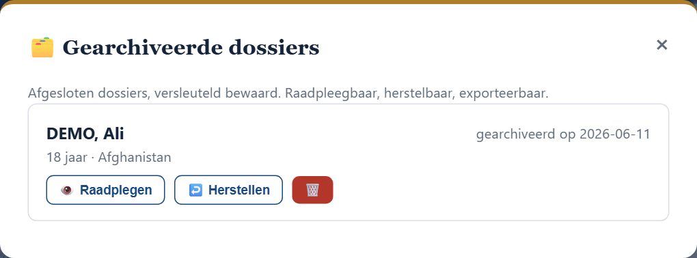
19Veelgestelde vragen
« Ik ben mijn wachtwoord vergeten »
Op het aanmeldscherm wist « Wachtwoord vergeten? Resetten » alles en begint u opnieuw. Herstel daarna uw laatste .menabackup — precies daarom maakt u elke week een back-up.
« Gaan mijn gegevens naar het internet? »
Nee. Nooit. De dossiers zijn versleuteld (AES-256) en staan enkel in uw browser/toestel. Zelfs de AI-vertaling draait lokaal. De code van de applicatie is publiek en controleerbaar.
« Werkt de applicatie zonder internet? »
Ja, zodra ze één keer geopend werd (en geïnstalleerd via « App installeren »). Enkel de allereerste lading en de eenmalige download van de AI-vertaalmodellen vragen een verbinding.
« Hoe updaten? »
Onderaan de pagina vergelijkt « 🔄 Updates controleren » uw versie met de laatst gepubliceerde. De webversie werkt zichzelf bij.
« Wie bellen in noodgevallen? »
- Verdwijning: politie + Child Focus 116 000 (24/7) + Dienst Voogdij + Fedasil — binnen 24 u.
- Politieverhoor: Salduz-permanentie advocaten 0800 90 808 — nooit een verhoor zonder advocaat.
- Dienst Voogdij: 02 542 70 51 (noodgevallen: 078 15 43 24).
20⚖️ De nieuwe regels 2025-2026, eenvoudig uitgelegd
Het vreemdelingenrecht is recent sterk veranderd. De applicatie is aan deze hervormingen aangepast (haar automatische adviezen houden er rekening mee), maar u moet ze begrijpen. Dit is de essentie, in juni 2026 geverifieerd op de officiële bronnen.
A. Gezinshereniging: de wet van 18 juli 2025
In werking sinds 18 augustus 2025; deze wet verstrengt de regels aanzienlijk. Wat concreet verandert voor uw voogdijen:
- De « gunstige » termijn gaat van 1 jaar naar 6 MAANDEN. Wanneer uw jongere als vluchteling erkend wordt, kan zijn familie (ouders) hem vervoegen zonder inkomens- en woonstvoorwaarden — maar alleen als de aanvraag binnen 6 maanden na de erkenning wordt ingediend. Vóór de hervorming was dat een jaar. Praktisch gevolg: vanaf de positieve CGVS-beslissing is het een race tegen de klok — de applicatie maakt automatisch de herinnering en het advies aan zodra ze de erkenning in een document detecteert.
- Na de 6 maanden: de familie moet een inkomen van minstens 120 % van het leefloon bewijzen (ongeveer 2 130 € netto/maand — sociale uitkeringen tellen niet mee), een voldoende woonst en een ziekteverzekering. Voor de meeste families in het herkomstland is dat zo goed als onmogelijk.
- Stilzwijgen geldt voortaan als WEIGERING. Vroeger werd een aanvraag zonder antwoord binnen de termijn (9 maanden) automatisch aanvaard. Dat is omgekeerd: zonder antwoord is de aanvraag automatisch verworpen, en is beroep nodig. Volg dus elke aanvraag actief op met de advocaat.
- Specifieke NBMV-beperking: een ouder kan zijn minderjarig erkend kind niet meer vervoegen als het kind bij aankomst in België vergezeld was door de andere ouder.
- Subsidiaire bescherming — heet hangijzer: de wet sloot gezinshereniging van de ouders met een subsidiair beschermde NBMV uit. Het Grondwettelijk Hof schorste dit verschil in behandeling (arrest van 26 februari 2026, vragen aan het Hof van Justitie van de EU). Het recht is dus in beweging: beslis nooit alleen voor een subsidiair beschermde jongere — bel de advocaat en raadpleeg Myria.
B. De leeftijdstest: België veroordeeld (EHRM, 6 maart 2025)
Het Europees Hof voor de Rechten van de Mens oordeelde dat de Belgische leeftijdsbepalingsprocedure onvoldoende procedurele waarborgen biedt (schending van artikel 8). Concreet, als uw jongere na de drievoudige medische test meerderjarig wordt verklaard:
- heeft het beroep vandaag veel meer gewicht — de advocaat moet dit arrest citeren;
- eis altijd de volledige kopie van de resultaten en de foutmarge (vaak ±2 jaar);
- verzamel elk identiteitsdocument (taskara, geboorteakte) via de familie — nooit via de ambassade voor een asielzoeker.
De applicatie citeert dit arrest automatisch in haar advies wanneer de documentanalyse een resultaat « meerderjarig » detecteert.
C. De opvang onder druk (hervorming 2025)
De asielhervorming van juli 2025 laat o.a. toe om opvang te weigeren aan personen die al bescherming genieten in een ander EU-land, en het opvangnetwerk krimpt. Ook hier schorste het Grondwettelijk Hof bepaalde maatregelen (26 februari 2026). Wat niet verandert: een NBMV is prioritair en heeft altijd recht op aangepaste opvang. Wordt een plaats geweigerd of is ze ongeschikt, meld het onmiddellijk aan de Dienst Voogdij en de advocaat — laat een minderjarige nooit zonder huisvestingsoplossing.
21🧰 De geavanceerde tools
Vijf tools vervolledigen uw dagelijks werk — alle bereikbaar in twee klikken:
🧮 De termijnencalculator (in elk dossier)
U ontvangt een beslissing en vraagt zich af « wat zet dit in gang, en tegen wanneer? ». Open het dossier → 🧮 Termijnen: kies de gebeurtenis (aanstelling, erkenning, CGVS-weigering, BGV, oproeping, vervaldatum titel) en haar datum — alle wettelijke termijnen die eruit volgen verschijnen, gedateerd. Eén klik voegt ze toe aan de agenda. Voorbeeld: « Negatieve CGVS-beslissing op 3 maart » → advocaat tegen 6 maart, laatste dag RvV-beroep op 2 april.
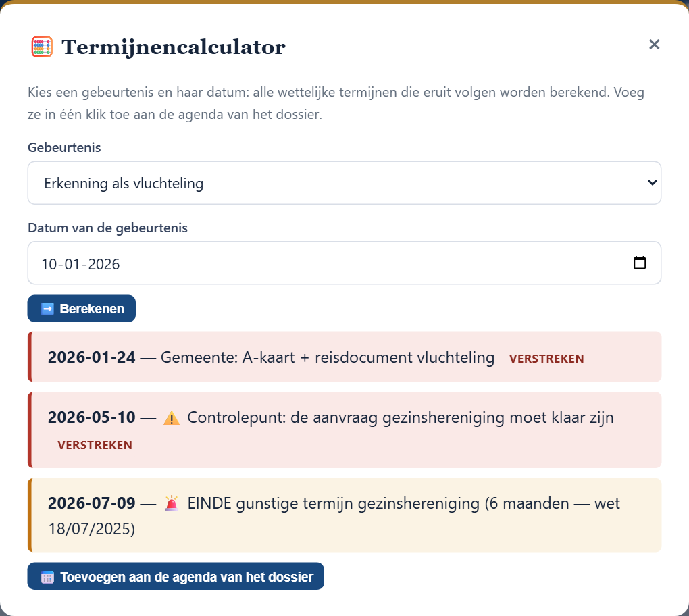
🛂 Het CGVS-gehoor voorbereiden (in elk dossier)
Het gehoor is HET beslissende moment van de asielaanvraag. De knop 🛂 CGVS-voorbereiding opent een vragenlijst met 8 thema's (identiteit, chronologie van de vlucht, vrees, precieze gebeurtenissen, traject, bewijzen, gevoelige punten, praktisch) — in te vullen met de jongere, op zijn ritme, over meerdere sessies. Alles wordt bewaard in het dossier en is exporteerbaar als vertrouwelijke PDF voor de advocaat.
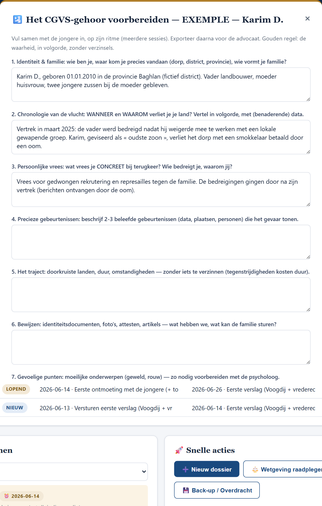
📈 Mijn statistieken (dashboard)
De knop 📈 Mijn statistieken vat uw jaar samen: verslagen op tijd of te laat, gedane afspraken, te behandelen adviezen, en vooral het totaal van de kilometers en het te declareren bedrag bij de Dienst Voogdij.
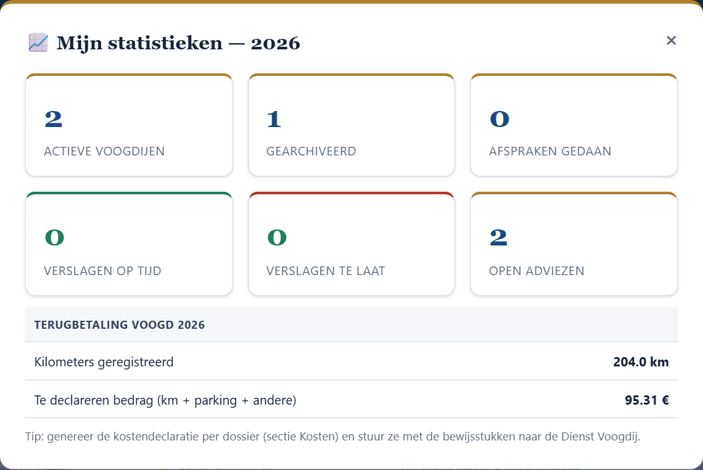
⚖️ Live juridische waarschuwingen
Wanneer een belangrijke beslissing valt (bv. het definitieve arrest van het Grondwettelijk Hof over gezinshereniging), verschijnt een rode banner « JURIDISCHE WAARSCHUWING » op uw dashboard zodra u online bent. Lees ze en klik « ✓ Begrepen ». Een automatische monitoring bewaakt bovendien twee keer per maand de inhoud van de officiële pagina's (FOD Justitie, CGVS, Myria, Fedasil).
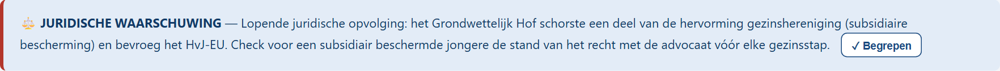
🆕 De versienotities
Na elke update vat een venster « Nieuw » samen wat veranderde — u weet altijd waarom een scherm evolueerde.
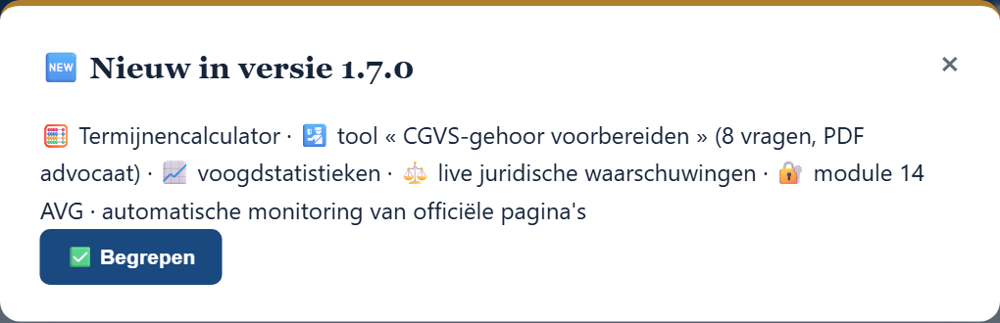